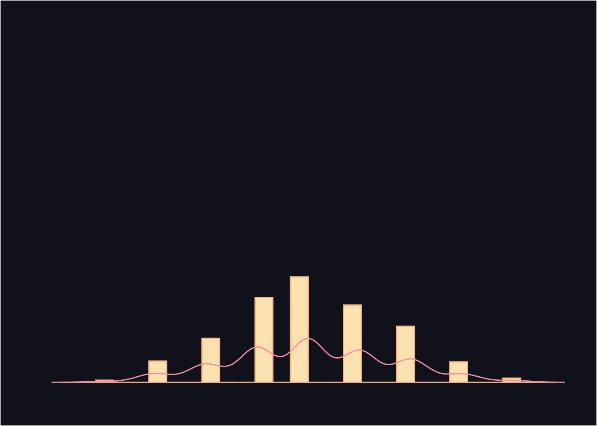
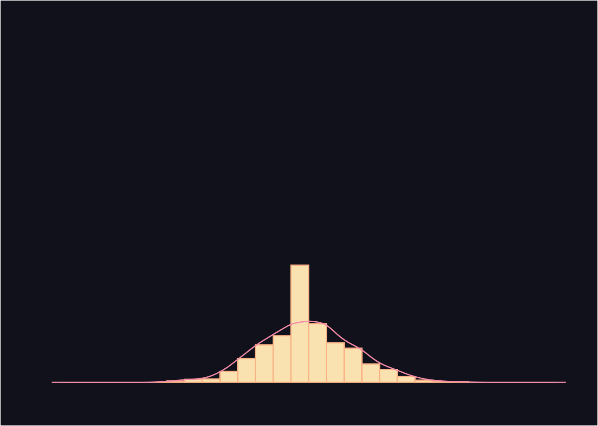
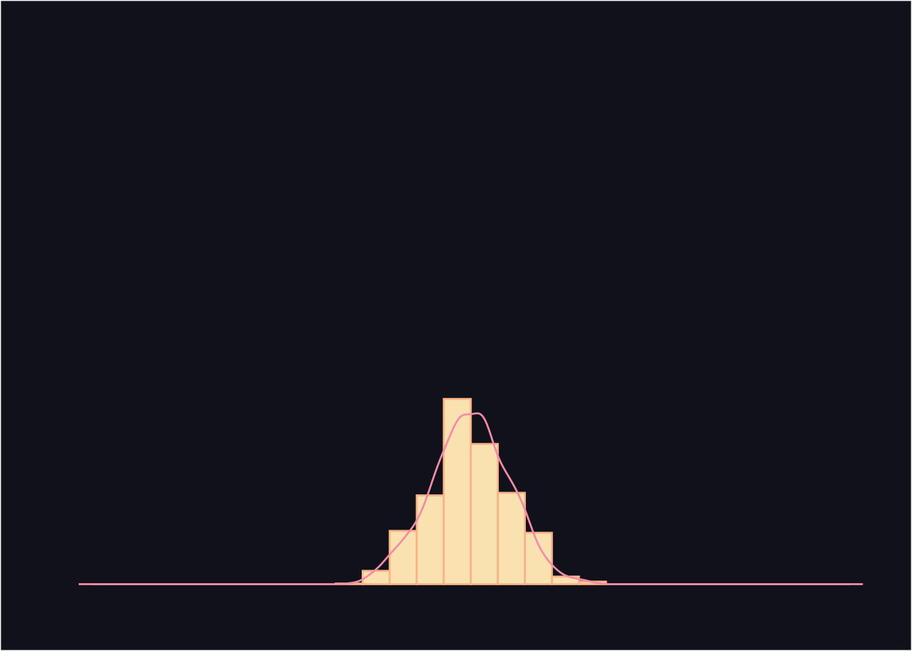
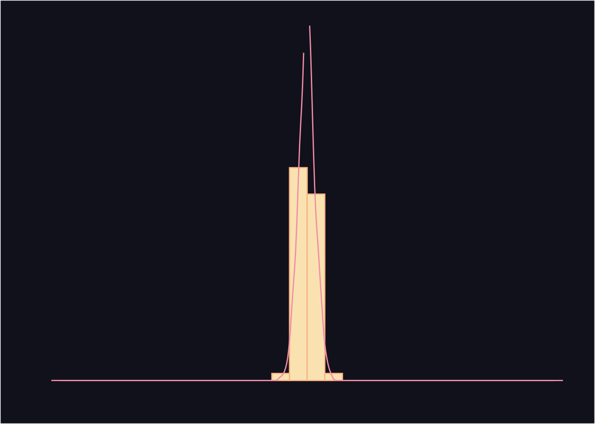

The galton machine
Law of large numbers
Plot
draw_samples(1000, 10) |>
plot_samples()
draw_samples(1000, 30) |>
plot_samples()
draw_samples(1000, 100) |>
plot_samples()
draw_samples(1000, 1000) |>
plot_samples()



As sample size increases, the mean of samples approach a normal distribution.